12/07/2025 — Vì sao phải mất 70 năm điều này mới gây rắc rối? Và đâu là các dấu hiệu nguy cơ trên điện tâm đồ này?
Bản dịch tiếng Việt của bài "Why did it take 70 years for this to cause trouble? And what are the markers of risk in this ECG?" – Dr. Smith’s ECG Blog. Giữ nguyên toàn bộ 13 hình ảnh của bản gốc.

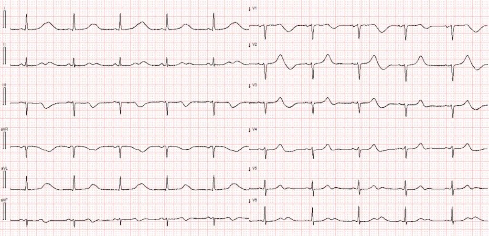
Bệnh nhân này nhập viện sau khi bị ngất trong lúc đang ngồi. Bất thường chính trên điện tâm đồ này là gì, và đặc điểm điện tâm đồ bổ sung, kín đáo hơn nào có thể dự báo các biến cố trong tương lai?
Điện tâm đồ #1

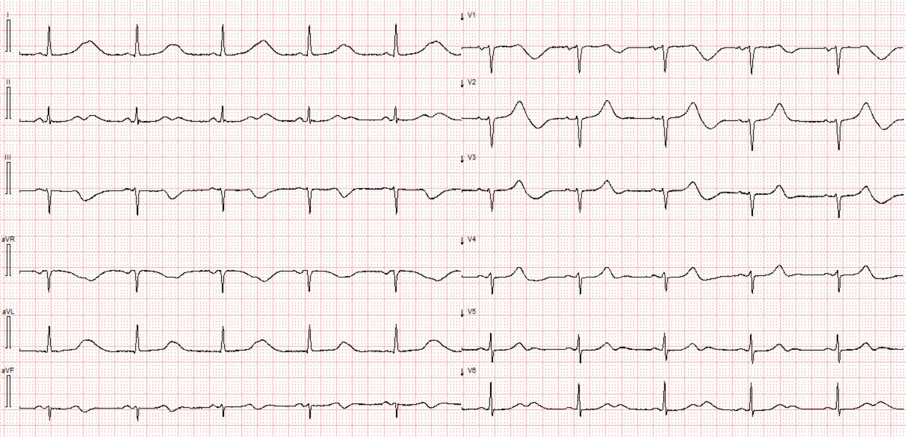
Tốc độ giấy 25mm/s. Bố cục điện tâm đồ chuẩn.
Điện tâm đồ này cho thấy nhịp xoang với tần số tim 55 lần/phút. Khoảng PR bình thường, phức bộ QRS hẹp, và trục QRS trên mặt phẳng trán nằm trong giới hạn bình thường. Sóng T trông cao nổi bật bất thường so với sóng R đi trước, đặc biệt ở chuyển đạo I và aVL. Thoạt nhìn, chúng có thể bị nhầm là sóng T tối cấp (hyperacute T waves).
Tuy nhiên, thực tế không phải vậy. Khoảng QT kéo dài rõ rệt, và điều quan trọng là phải nhận ra rằng sóng T có thể trông như “tối cấp” hoặc bị phóng đại khi QTc kéo dài đáng kể. Điều này đặc biệt đúng với hội chứng QT dài típ 1 (LQTS1), trong đó sóng T có đáy rộng. Hơn nữa, bệnh cảnh lâm sàng — ngất mà không hề than phiền đau ngực — không ủng hộ chẩn đoán sóng T tối cấp do thiếu máu cục bộ cơ tim.
Queen of Hearts biết rằng đây không phải là sóng T tối cấp:

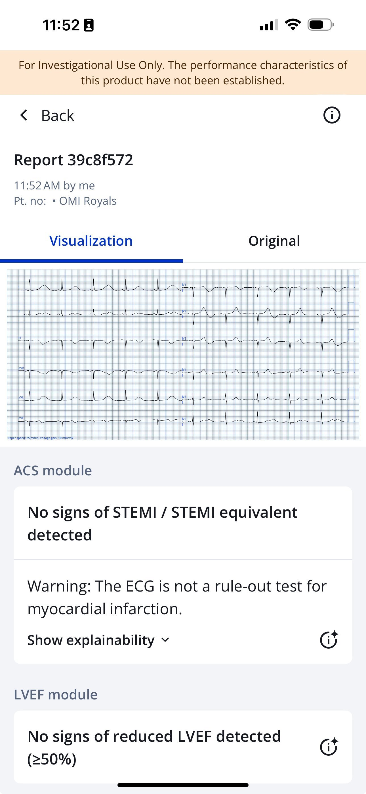
Việc đo khoảng QT đôi khi có thể khó khăn, đặc biệt nếu sóng T có biên độ thấp hoặc nếu có sóng U hòa lẫn với sóng T tạo thành khoảng QTU. Các sóng U lớn hòa vào sóng T nên được tính vào khoảng QT(U) (1).
Các thuật toán điện tâm đồ quy ước không phải lúc nào cũng đáng tin cậy khi đánh giá QT/QTc. Tuy nhiên, trong ca này, máy tính đã nhận diện được QT dài. Phép đo thủ công của tôi cho thấy khoảng QTc vào khoảng 630ms theo công thức hiệu chỉnh Bazett (các phương pháp khác gồm: Hodges, Fridericia, Framingham và Rautaharju).

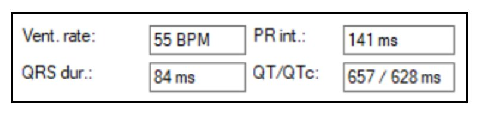
Bình luận của Smith:
Tính QT/QTc bằng máy tính
Vì tần số tim gần như đúng bằng 60 (55), mọi phương pháp hiệu chỉnh QT đều sẽ cho ra QTc rất gần với QT thô. Tuy nhiên, có lẽ không nên hiệu chỉnh khoảng QT khi tần số dưới 60. Lý do là tần số chậm khiến bệnh nhân có nguy cơ xoắn đỉnh cao hơn. Vì vậy, với tần số tim dưới 60, nên dùng toán đồ QT (QT Nomogram) (đặc biệt với QT kéo dài mắc phải). Bất kỳ khoảng QT nào nằm trên đường này đều là QT dài.
Toán đồ đây:

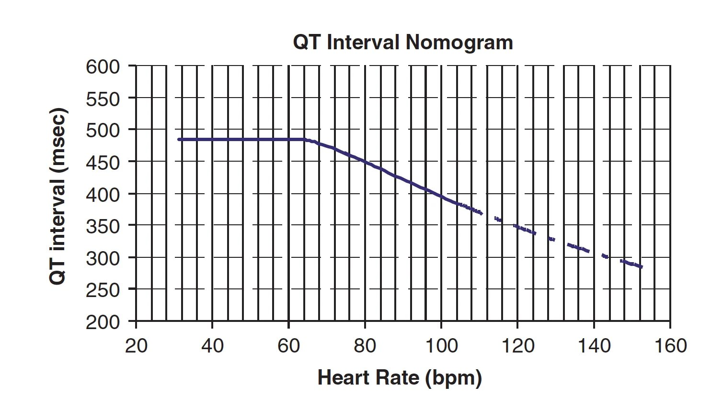
Mọi điều bạn muốn biết về các phương pháp hiệu chỉnh QT có ở đây: QT Correction Formulas Compared to The Rule of Thumb (“Half the RR”) (So sánh các công thức hiệu chỉnh QT với quy tắc kinh nghiệm “nửa RR”)
Trong thời gian nằm viện, bệnh nhân có nhiều cơn xoắn đỉnh (Torsades de Pointes, TdP) và rung thất. Một số cơn loạn nhịp tự kết thúc, trong khi những cơn khác cần khử rung để khôi phục nhịp bình thường. Các bản ghi theo dõi từ xa (telemetry) dưới đây cho thấy một số cơn rối loạn nhịp thất
Ca bệnh tiếp diễn:
Một loạt TdP

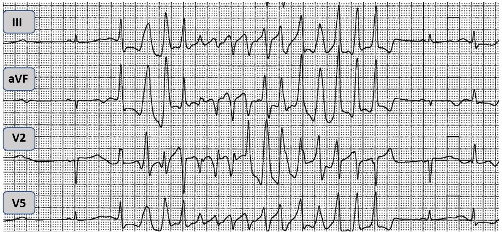
Rung thất đang được khử rung

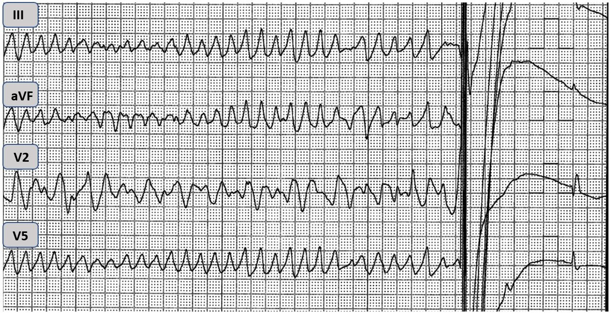
Bệnh nhân trong ca hôm nay không có tiền sử ngất. Tuy nhiên, con gái bà từng bị ngừng tim và sau đó được chẩn đoán hội chứng QT dài (LQTS). Trong quá trình khảo sát gia đình, bệnh nhân được làm xét nghiệm di truyền và được phát hiện mang đột biến gen KCNQ1, liên quan đến LQTS típ 1.
Câu hỏi đặt ra là tại sao bà lại khởi phát cơn bão loạn nhịp (arrhythmic storm) ở thập niên thứ 8 của cuộc đời?
Ở nhiều bệnh nhân mắc hội chứng QT dài, phần lớn thời gian khoảng QT bình thường hoặc chỉ hơi kéo dài. Rối loạn nhịp hiếm gặp và thường xảy ra sau khi tiếp xúc với một yếu tố khởi phát làm tăng khoảng QT. Ngoài ra, một số tình huống lâm sàng nhất định có thể khởi phát rối loạn nhịp ở các típ LQTS khác nhau.
Các yếu tố khởi phát thường gặp nhất là một số thuốc — bao gồm thuốc chống loạn nhịp (như sotalol, dofetilide, quinidine), một số kháng sinh (như macrolide và fluoroquinolone), thuốc chống loạn thần, thuốc chống trầm cảm, thuốc kháng histamin và thuốc chống nôn — cũng như rối loạn điện giải. Những bất thường điện giải thường gặp nhất có thể kéo dài khoảng QT là hạ kali máu và hạ magnesi máu.
Bệnh nhân của chúng tôi không dùng thuốc nào gây kéo dài QT. Bảng 1 dưới đây trình bày kết quả xét nghiệm máu lúc nhập viện và lần lấy máu xét nghiệm lại.
Bảng 1

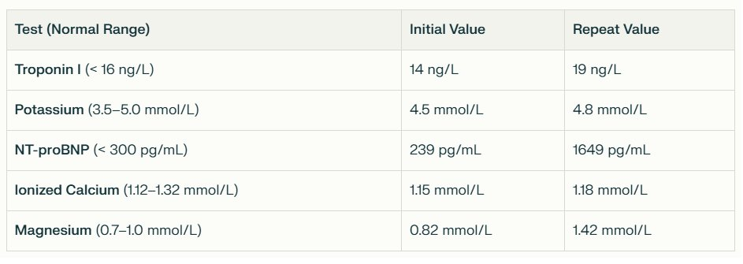
Xét nghiệm máu ban đầu và xét nghiệm lại. Lưu ý magnesi tăng sau khi tiêm tĩnh mạch liều nhanh (bolus)
Điện giải bình thường. Bệnh nhân tiếp tục có các loạt TdP dù đã được điều trị bằng magnesi tĩnh mạch. Đã thử phối hợp các thuốc chống loạn nhịp, gồm truyền metoprolol và truyền lidocaine. Cả hai thuốc đều không hiệu quả. Cuối cùng, một máy tạo nhịp tạm thời được đặt và bắt đầu tạo nhịp vượt tần số (overdrive pacing). Biện pháp này làm giảm mạnh các biến cố loạn nhịp.
Phần lớn các cơn TdP ở bệnh nhân LQTS (khoảng 75%) được khởi phát bởi các khoảng ngưng (2). Sau khi khoảng RR tăng lên, QTc kéo dài ra. Hiện tượng QT kéo dài phụ thuộc khoảng ngưng này là một yếu tố nguy cơ rối loạn nhịp đã được công nhận. Ở bệnh nhân của chúng tôi, các cơn TdP nhìn chung không được khởi phát bởi khoảng ngưng.
Ngoài khoảng ngưng, nhịp chậm cũng là một yếu tố nguy cơ rối loạn nhịp khi QTc kéo dài. Đặt máy tạo nhịp tạm thời có thể ngăn ngừa hiệu quả các khoảng ngưng và nhịp chậm, nhờ đó giảm nguy cơ biến cố loạn nhịp. Nếu không thể tạo nhịp tạm thời, có thể cân nhắc truyền isoproterenol như một biện pháp thay thế.
Thời gian đầu nằm viện, bệnh nhân lú lẫn và ngủ gà. Tình trạng này được cho là thứ phát do rối loạn nhịp tái diễn và benzodiazepine tĩnh mạch. Tuy nhiên, tình trạng ngủ gà kéo dài lâu hơn mức có thể giải thích chỉ bằng rối loạn nhịp và thuốc an thần. Dần dần cũng thấy rõ bệnh nhân có dấu hiệu lãng quên thị giác (visual neglect), và chụp CT sau đó phát hiện nhồi máu não.
==================================
Bàn luận
Bệnh nhân này đột ngột bị cơn bão loạn nhịp ở tuổi bảy mươi do QT kéo dài nặng từng lúc. Không có thuốc khởi phát hay bất thường điện giải nào. Siêu âm tim bình thường, và không nghi ngờ bệnh cơ tim do stress (vốn có thể gây QT kéo dài).
Khi không có những nguyên nhân thường gặp gây QT kéo dài nói trên, nhiều khả năng ổ nhồi máu não thấy trên CT đã gây ra một bất thường tái cực liên quan đến stress, dẫn đến khoảng QT kéo dài đến mức nguy hiểm ở bệnh nhân LQTS típ 1 này.
Liệu có khả năng QT dài vốn đã luôn hiện diện, còn đột quỵ chỉ gây ra nhịp chậm, khiến bà có nguy cơ bị xoắn đỉnh?
Giả thuyết này đã bị bác bỏ khi tìm thấy một điện tâm đồ cũ khác có QT dài 480 ms. Như vậy, đột quỵ có lẽ đã làm nặng thêm một khoảng QT vốn đã dài nhưng (chưa) kéo dài đến mức nguy hiểm, và có thể còn gây thêm nhịp chậm, dẫn đến TdP.
Như đã gợi ý ở đoạn đầu tiên của ca hôm nay, bên cạnh khoảng QT cực kỳ dài — điện tâm đồ ban đầu còn cho thấy một dấu hiệu thú vị và hiếm gặp khác. Dưới đây, chuyển đạo V1 và V2 đã được phóng to để bạn tiện quan sát.
CÂU HỎI: Dấu hiệu nào dự báo khả năng ngừng tim cao ở bệnh nhân của chúng tôi?
Trích đoạn điện tâm đồ #1

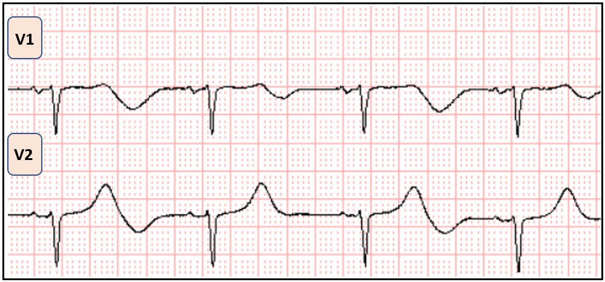
TRẢ LỜI: Ngoài QTc kéo dài rõ rệt, điện tâm đồ ban đầu còn bộc lộ một đặc điểm đáng chú ý khác: sóng T luân phiên (T-wave alternans). Quan sát kỹ sóng T ở tất cả các chuyển đạo, và đặc biệt là hình phóng to chuyển đạo V1 và V2, cho thấy sự luân phiên từng nhát một về biên độ và/hoặc hình dạng của sóng T. Nghĩa là, cứ cách một nhát thì sóng T lại trông khác về chiều cao hoặc hình thái so với sóng T bên cạnh.

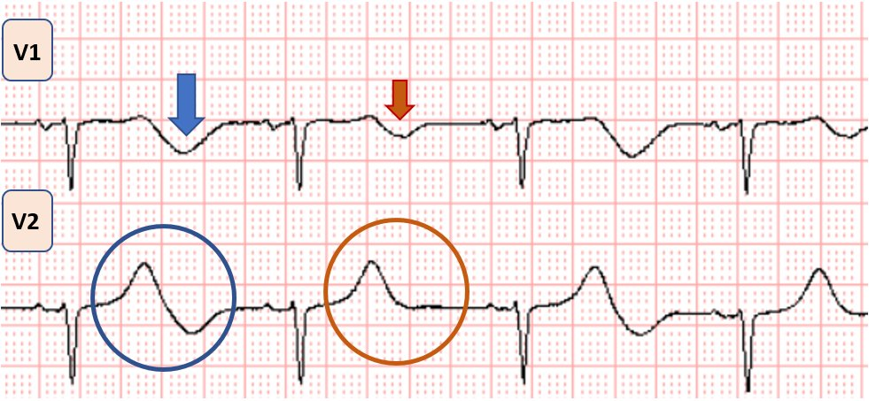
Ở trên: Vòng tròn xanh và mũi tên xanh cho thấy thành phần âm ở phần cuối sóng T lớn hơn, trái ngược với vòng tròn đỏ và mũi tên đỏ. Kiểu hình này mang tính nhịp đôi, thay đổi cứ cách một nhát.
Hiện tượng này, được gọi là sóng T luân phiên — ở đây có thể thấy rõ bằng mắt thường, và được công nhận là dấu hiệu của sự bất ổn định điện học và tăng nguy cơ rối loạn nhịp thất, đặc biệt trong bối cảnh hội chứng QT dài.
Có nhiều típ LQTS, trong đó LQTS 1-3 chiếm phần lớn các ca. LQTS1 là biến thể thường gặp nhất, chiếm khoảng 30-35% tổng số ca. Như trình bày trong Bảng dưới đây — mỗi típ LQTS có những đặc điểm phân biệt về điện tâm đồ, về di truyền và về các tình huống lâm sàng dẫn đến ngừng tim.
Những khác biệt chính giữa các típ phụ của LQTS

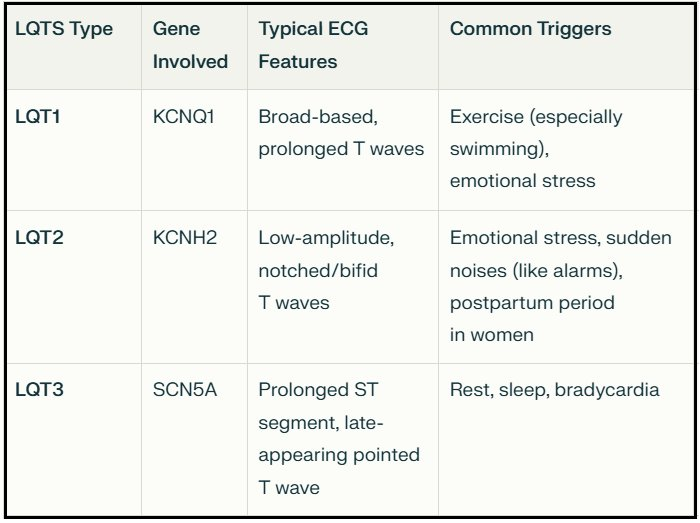
Trong LQTS típ 1 (típ mà bệnh nhân này mắc) — sóng T có đáy rộng và có thể gây ấn tượng là sóng T tối cấp. LQTS típ 2 và 3 thường có sóng T biên độ thấp hơn. Trong LQTS típ 3, đoạn ST kéo dài với sóng T xuất hiện muộn và nhọn.
Các típ hình thái của LQTS

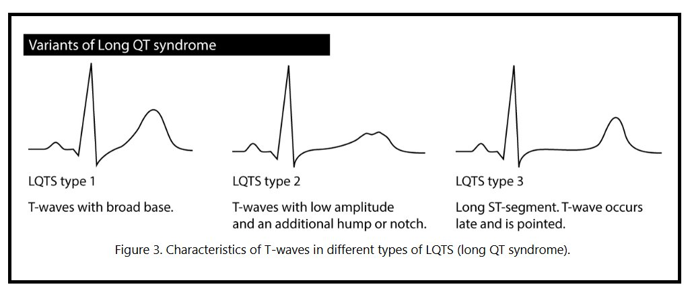
Hình được sao chép từ ECGwaves.com
Kết cục
Bệnh nhân trong ca hôm nay cuối cùng đã hồi phục tốt. Bà được cấy máy khử rung tim cấy được (ICD) vì LQTS kèm cơn bão loạn nhịp. Sau đột quỵ, QTc rút ngắn dần xuống còn 476ms.
Trả lời các câu hỏi trong tiêu đề: 1) Phải đến năm 70 tuổi bà mới bị đột quỵ, làm kéo dài QT và có thể còn dẫn đến nhịp chậm 2) Các dấu hiệu nguy cơ là: A) QT rất dài B) sóng T luân phiên C) Nhịp chậm.
= = =
Những điểm cần học
- Hội chứng QT dài — đặc biệt là típ 1, có thể gây ấn tượng sai lầm là sóng T tối cấp.
- Sóng T luân phiên là một yếu tố dự báo đáng lo ngại của rối loạn nhịp thất.
- Tạo nhịp vượt tần số thường hữu ích để ức chế rối loạn nhịp ở bệnh nhân có QTc kéo dài, đặc biệt nếu các cơn TdP phụ thuộc khoảng ngưng.
Tài liệu tham khảo
- Rawshani, A., MD PhD, & Rawshani, A., MD PhD. (2025, January 11). Long QT (QTc) interval, long QT syndrome (LQTS) & torsades de pointes. The Cardiovascular. https://ecgwaves.com/topic/longt-qt-syndrome-interval-lqts-torsades-de-pointes/
- Viskin, S. (2000). Arrhythmias in the congenital long QT syndrome: how often is torsade de pointes pause dependent? Heart, 83(6), 661–666. https://doi.org/10.1136/heart.83.6.661
= = =
======================================
BÌNH LUẬN CỦA TÔI, bởi KEN GRAUER, MD (12/7/2025 ):
Một ca thú vị của Dr. Nossen — về một bất thường điện tâm đồ “bẩm sinh” mà mãi đến nhiều thập kỷ sau mới khiến người bệnh phải đi khám!
- Tôi tập trung Bình luận của tôi vào một số điểm bổ sung cho những điểm đã được nêu trong phần bàn luận xuất sắc của Dr. Nossen ở trên.
- Để cho rõ, trong Hình 1 — tôi đã đánh dấu các vùng MẤU CHỐT trên điện tâm đồ ban đầu của ca hôm nay, những vùng khiến tôi không chắc chắn về những gì mình đang thấy.
= = =
QTc trên điện tâm đồ hôm nay dài bao nhiêu?
NHẮC LẠI: Việc xác định chính xác QTc ( = khoảng QT được hiệu chỉnh (corrected) theo tần số tim) là thiết yếu để xử trí tối ưu một số tình trạng lâm sàng quan trọng. Điều này đặc biệt đúng với ca hôm nay, trong đó bệnh nhân bị cơn bão loạn nhịp, với các cơn xoắn đỉnh (Torsades de Pointes) ( = một tình trạng phụ thuộc vào việc xác định chính xác QTc để phân biệt với VT đa dạng, vốn có QTc bình thường).
- Để thuận tiện cho việc xác định QTc ở các tần số tim khác nhau — Chúng tôi đã thêm một Công cụ tính QTc (QTc Calculator) có thể truy cập dễ dàng từ Menu nằm ở ĐẦU mỗi trang của Dr. Smith’s ECG Blog.
- Vào mục Tools & Guides trên Menu ở ĐẦU trang. Từ menu thả xuống, bấm vào QT Calculator. Thao tác này sẽ đưa bạn đến TRANG NÀY —
Dr. Nossen ước tính QTc trên điện tâm đồ ban đầu của ca hôm nay là ~630 msec.
- Dr. Nossen có thể đúng.
- Suy nghĩ của tôi — Tôi không biết QTc trên điện tâm đồ ban đầu của ca hôm nay là bao nhiêu (để cho rõ, tôi đã in lại điện tâm đồ này trong Hình 1).
- Lý do tôi không biết QTc trên điện tâm đồ #1 là bao nhiêu — là vì có một dạng điện thế luân phiên (electrical alternans), trong đó hoặc sóng T hoặc sóng U thay đổi kích thước và hình dạng cứ cách một nhát.
- Tôi thực sự không chắc trong Hình 1 — sóng T kết thúc ở đâu (và sóng U bắt đầu ở đâu). Nếu không xác định được điều này — thì không thể chắc chắn về khoảng QTc.
= = =
Hình 1: Tôi đã đánh dấu điện tâm đồ ban đầu của ca hôm nay. Sóng T kết thúc ở đâu và sóng U bắt đầu ở đâu? (Có sóng T luân phiên hay sóng U luân phiên?).

= = =
Xem kỹ hơn điện tâm đồ ban đầu của ca hôm nay:
Tại sao lại khó đánh giá khoảng QTc trên điện tâm đồ #1 đến vậy? Điều này có làm thay đổi cách xử trí bệnh nhân hôm nay không?
- Thách thức thứ 1 khi đánh giá bản ghi hôm nay — là chúng ta chỉ có 5 nhát để xem trong Hình 1 (tức là, 5 nhát giống nhau được thấy ở cả các chuyển đạo trước ngực — lẫn các chuyển đạo chi). Ngoài ra — khoảng R-R không hoàn toàn đều. Vì vậy, chúng ta chỉ có 5 nhát trong tình trạng loạn nhịp xoang này để xác định QTc.
- Tiếp theo — có một dạng sóng T hoặc sóng U luân phiên (Xem Bình luận của tôi ở cuối trang trong bài ngày 23 tháng Mười năm 2023 trên Dr. Smith’s ECG Blog để ôn lại các dạng và ý nghĩa lâm sàng của điện thế luân phiên). Theo phần bàn luận ở trên của Dr. Nossen (và như đã được nêu trong ca ngày 23 tháng Mười năm 2023 được trích dẫn ở trên) — sự hiện diện của sóng T (và có lẽ cả sóng U) luân phiên cần cảnh báo người điều trị về nguy cơ xoắn đỉnh tăng lên đáng kể — trừ khi các yếu tố thúc đẩy được điều chỉnh kịp thời, và đặc biệt là điện giải huyết thanh được đưa về bình thường (thường có sự hỗ trợ của việc bổ sung magnesi tĩnh mạch).
Ví dụ — Hãy XEM LẠI Hình 1:
- Lưu ý sự luân phiên về kích thước và hình thái xảy ra cứ cách một phức bộ QRS (Thấy rõ nhất ở sóng T và sóng U trong chuyển đạo I,II — và trong chuyển đạo V1,V2).
- Chẳng phải ở chuyển đạo I và V1 trông như sóng T đang thay đổi mạnh mẽ đó sao (trở nên lớn hơn nhiều ở sóng T của các nhát #1,3,5?).
- Nhưng còn chuyển đạo II và V2? Chẳng phải trông như chính sóng U (chứ không phải sóng T) mới là sóng lớn lên nhiều ở các nhát xen kẽ sao? (với một sóng U âm khổng lồ giờ thấy ở chuyển đạo V2 tại các nhát #1,3,5?).
- Hoặc có lẽ, thay vì hoặc sóng T hoặc sóng U — chính sự hòa trộn giữa sóng T và sóng U mới là nguyên nhân gây ra thay đổi hình thái bất thường thấy sau các phức bộ QRS xen kẽ?
- LƯU Ý: Phần lớn trường hợp — không khó để phân biệt điểm kết thúc sóng T với điểm bắt đầu sóng U. Nhưng ca hôm nay minh họa một trường hợp mà tôi không thể tự tin làm được điều đó.
- Đã có những hướng dẫn được trích dẫn về cách đo khoảng QT trong các trường hợp có sóng U nổi bật (Xem bên dưới). Nhưng như ở Ô D trong Hình 2 của tôi bên dưới — việc tính cả một sóng U lớn trông như hòa vào sóng T đi trước khi xác định QT — có nguy cơ ước tính quá mức QTc khi vẫn còn chưa chắc chắn sóng T kết thúc ở đâu.
- Riera và cs. (Cardiol J 15(5):408-421, 2008) đề xuất dùng thuật ngữ “khoảng Q(T + U)” — khi khoảng này kéo dài rõ rệt, trong đó một sóng U trông như khổng lồ che lấp điểm kết thúc sóng T.
- Riera cũng trích dẫn khuyến cáo khi phân vân giữa một sóng T hai đỉnh với một sóng T và sóng U — là đo khoảng cách giữa 2 đỉnh nhìn thấy được (như tôi minh họa bằng sơ đồ ở chuyển đạo V5 trong Hình 1).
- Nếu khoảng cách giữa 2 đỉnh này <150 msec. ==> thì coi đây là sóng T hai đỉnh.
- Nhưng nếu khoảng cách giữa các đỉnh >150 msec. ==> Coi như có cả sóng T lẫn sóng U. (tức là, Trong Hình 1 — khoảng cách giữa các đỉnh = 1 ô lớn trên giấy điện tâm đồ = 200 msec., điều này, nếu khuyến cáo trên là chính xác, gợi ý rằng chúng ta đang thấy một sóng T và một sóng U trong Hình 1).
- Dù vậy, do sự khác biệt mà tôi đã nêu trước đó giữa những gì ta thấy ở sóng T trong chuyển đạo I,V1 so với những gì ta thấy ở sóng U trong chuyển đạo II,V2 ở Hình 1 — tôi thấy khó chấp nhận khuyến cáo về khoảng cách giữa các đỉnh làm tiêu chí duy nhất.
= = =
ĐIỀU CỐT LÕI:
Tôi vẫn không biết sóng T kết thúc ở đâu trong Hình 1 (tức là, tại điểm đường thẳng đứng màu XANH nhạt cắt đường nền — hay tại điểm đường thẳng đứng màu ĐỎ cắt đường nền?).
- Về mặt lâm sàng — Sự phân biệt này không quan trọng. Mặc dù ước tính của tôi về khoảng QTc trên điện tâm đồ #1 trong ca hôm nay thấp hơn con số 630 msec. mà Dr. Nossen ước tính — cả hai chúng tôi đều đồng ý rằng QTc kéo dài đáng kể!
- Cả hai chúng tôi cũng đồng ý rằng sự thay đổi hình thái bất thường ở các nhát xen kẽ (bất kể đây là thay đổi của sóng T hay sóng U hay một sự hòa trộn khó phân định giữa hai sóng) — cho thấy có hoặc sóng T luân phiên hoặc sóng U luân phiên, và đây là một cảnh báo nguy cơ cao về sự xuất hiện xoắn đỉnh trừ khi các tình trạng chuyển hóa (và đặc biệt là nồng độ K+ và Mg++ huyết thanh) được tối ưu hóa nhanh chóng.
- Nhân tiện — Nguyên nhân gây ra sóng U trên điện tâm đồ vẫn còn chưa chắc chắn. Trong số các giả thuyết về cơ chế tạo ra sóng U có: tái cực của các sợi Purkinje — tái cực muộn của cơ nhú — các hậu điện thế (after-potentials) gây ra bởi lực cơ học ở thành thất — tái cực kéo dài của các “tế bào M” ở lớp giữa cơ tim. Nhưng — Thực sự không ai biết …
- ĐIỂM THEN CHỐT (PEARL) #1: Bất kể căn nguyên là sóng T hay sóng U — mức độ hòa lẫn rõ rệt giữa sóng T và sóng U thấy trên điện tâm đồ ban đầu hôm nay là điển hình của LQTS, típ 1 mà bệnh nhân hôm nay được phát hiện mắc.
- ĐIỂM THEN CHỐT (PEARL) #2: Từ lâu tôi đã xây dựng một DANH SÁCH dễ nhớ nhưng hữu ích đến bất ngờ gồm 3 Nguyên nhân cần nghĩ đến mỗi khi gặp QTc dài ở một bệnh nhân không có QRS rộng. Hãy nghĩ đến những điều sau! — i) Thuốc (như đã nêu ở trên trong phần bàn luận của Dr. Nossen); — ii) Điện giải (Lytes) (đặc biệt là K+ và Mg++ huyết thanh thấp — nhưng cả Ca++ thấp); — và, iii) Rối loạn thần kinh trung ương (CNS) (tức là, Đột quỵ [như ở bệnh nhân trong ca hôm nay] — Chảy máu thần kinh trung ương — U não — Hôn mê — Co giật — Chấn thương đầu — vì một số điện tâm đồ bất thường nhất được thấy ở bệnh nhân có một dạng cấp cứu thần kinh trung ương nào đó).
- Năm 2025 — tôi sẽ bổ sung vào DANH SÁCH trên, trong những bối cảnh lâm sàng phù hợp — iv) Bệnh cơ tim Takotsubo (do stress) (với sự phân bố giải phẫu bất thường của các bất thường ST-sóng T trên điện tâm đồ, xảy ra kèm theo khoảng QTc dài đến bất ngờ — gợi ý bệnh lý này ở bệnh nhân mới bị đau ngực, suy tim, stress nặng, v.v.).
= = =
Cách đo QTc khi có sóng U:
Trong Hình 2 — tôi đã phỏng theo hình được Rawshani công bố trong tài liệu tham khảo đầu tiên mà Dr. Nossen trích dẫn ở trên (Rawshani — Cardiovasc Med, 2025). Dưới đây tôi đã tổng hợp một số mẹo hữu ích do Rawshani đưa ra:
- Để đạt độ chính xác tối ưu — Hãy đo QT bằng tay, lý tưởng là dùng một loạt nhát liên tiếp — lấy từ hơn một chuyển đạo — chọn khoảng QT dài nhất mà bạn có thể thấy rõ các mốc khởi đầu và kết thúc của QT.
- Khoảng QT nên được đo từ điểm khởi đầu phức bộ QRS đến điểm kết thúc sóng T (tức là, Nếu không có sóng Q — bắt đầu đo từ sóng R).
- Lý tưởng là nên tránh các chuyển đạo có sóng U lớn. Dù được khuyến cáo là tính cả các sóng U lớn hòa vào sóng T đi trước vào phép đo — Cần nhận thức rằng làm như vậy có thể dẫn đến ước tính quá mức khoảng QT (và đây là một vấn đề đáng kể trong ca hôm nay!).
- Hãy nhớ hiệu chỉnh khoảng QT theo tần số tim! (Xem phần Nhắc lại của tôi ở trên, gần đầu phần Bình luận của tôi).
= = =
= = =
Hình 2: Cách đo QTc khi có sóng U (Hình phỏng theo Rawshani — Cardiovasc Med, 2025).

= = =
= = =